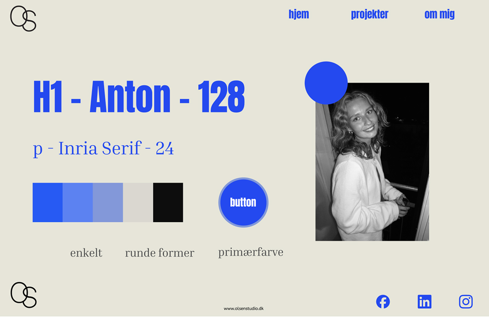
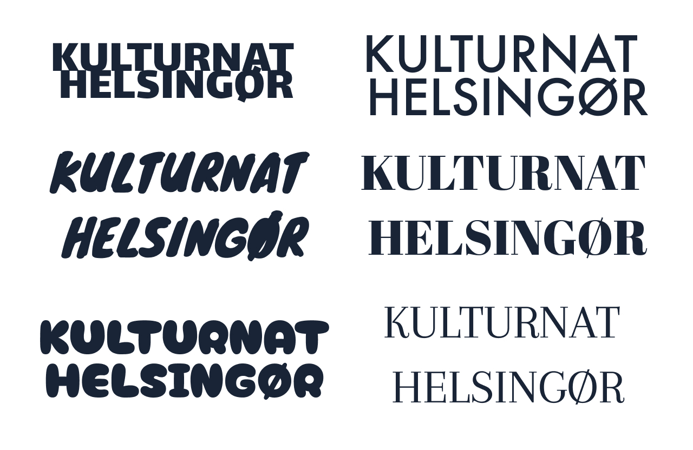
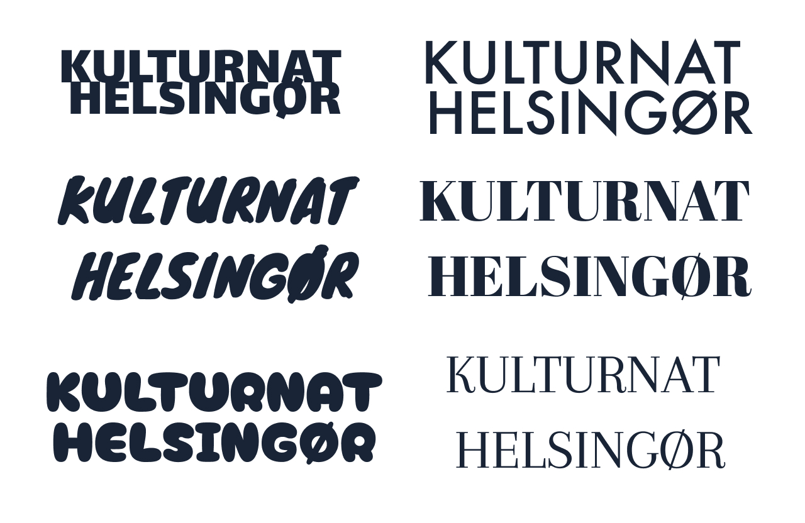
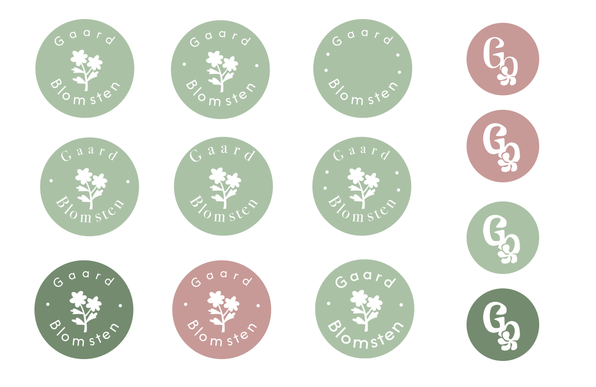
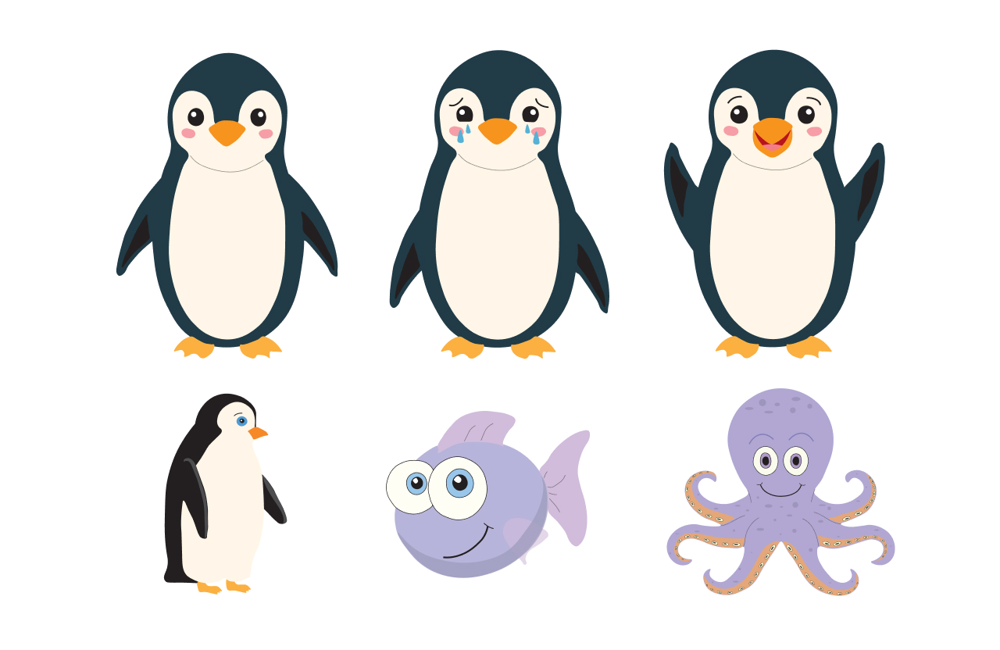
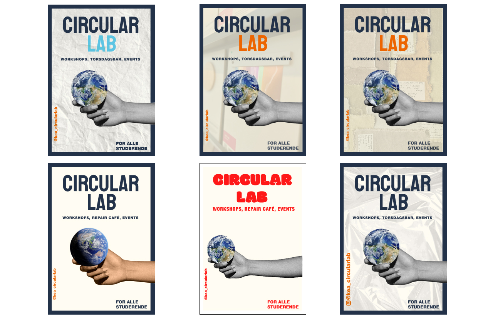
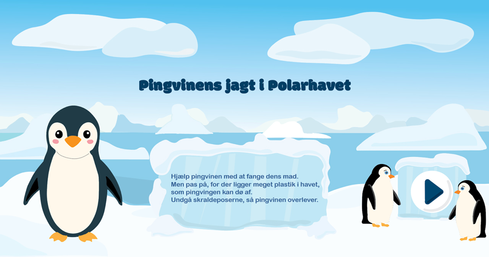
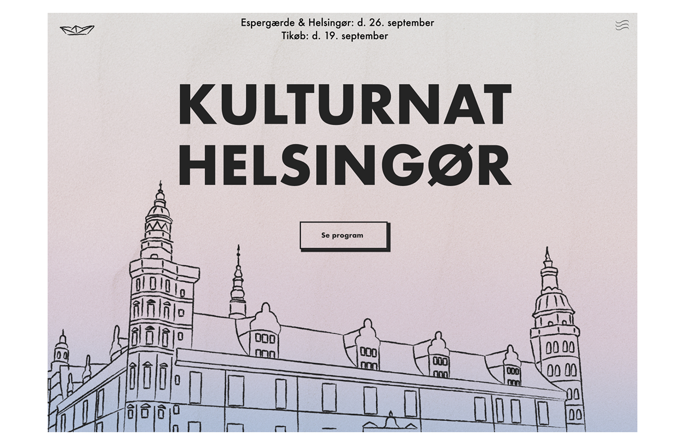
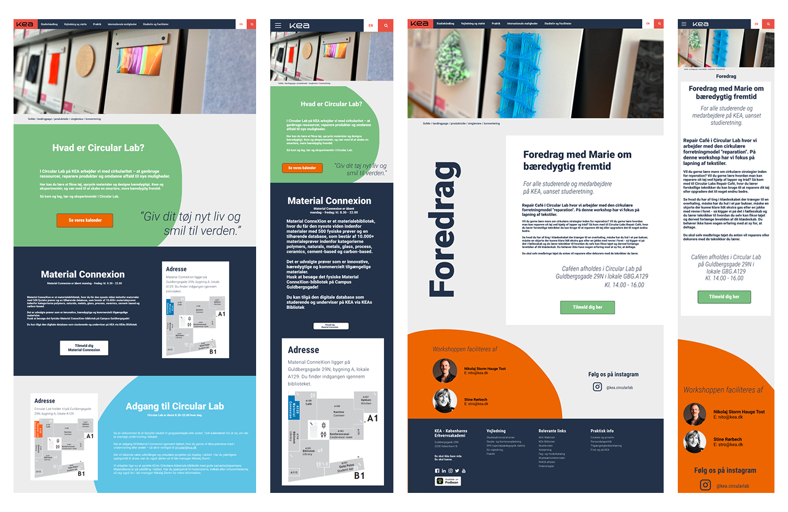
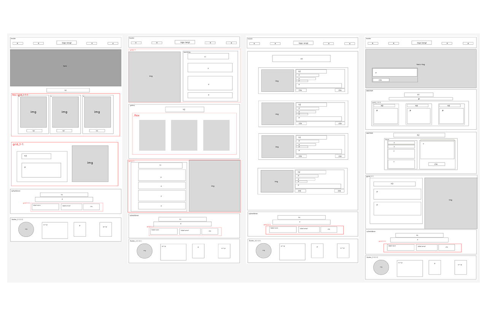

Webdesigner
med blik for detaljen
test igen
Hvem er jeg?
passion, motivation & baggrund
Passion
Mit navn er Sarah Timann Olsen, og jeg er 22 år gammel. Jeg er multimediedesignstuderende på Erhvervsakademi København og har en stærk interesse for webdesign og frontend, hvor jeg kan kombinere min passion for visuel identitet og digital kommunikation med min evne til at omsætte idéer til konkrete løsninger. Jeg trives i krydsfeltet mellem design og teknik, hvor jeg både kan tænke kreativt og arbejde struktureret med implementering.
Motivation
Jeg har en høj læringskurve, er detaljeorienteret og enormt motiveret for at afprøve mine erfaringer fra studiet i det virkelige erhvervsliv. Jeg har en stærk trang til at lære og udvikle mig indenfor webdesign og kommunikation.
Baggrund
Min baggrund som værnepligtig og guide i Sydafrika har givet mig evnen til at tage ansvar, bevare overblikket og kommunikere klart - kompetencer jeg ser som en styrke i samarbejde og projekter.

CV Sarah Timann Olsen
Jeg har lært at tage ansvar for både mine egne opgaver og samarbejdet i en gruppe. Jeg har erfaring med at arbejde tæt sammen med andre under pres og mod et fælles mål. Gennem selvdisciplin har jeg lært at strukturere min tid og fastholde en høj arbejdsmoral, også i krævende situationer. Derudover har jeg opnået stærke evner inden for problemløsning og kan håndtere udfordringer samt finde løsninger i uforudsete og komplekse sammenhænge.
Jeg har lært at kommunikere klart og tilpasse min formidling til forskellige målgrupper. Jeg har fået erfaring med at arbejde med mennesker fra andre lande og opnået en god kulturel forståelse. Derudover har jeg lært at yde service, være imødekommende og problemløsende samt at organisere og koordinere aktiviteter.
Jeg har lært at udvise empati og hjælpsomhed ved at støtte mennesker i stressede situationer. Samtidig har jeg opnået erfaring med at være årvågen og konstant opmærksom for at sikre andres sikkerhed.
Jeg er i gang med at opbygge erfaring som studentermedhjælper, hvor jeg kan omsætte min viden fra studiet til praksis. Jeg arbejder på at udvikle mine kompetencer inden for at tage ansvar, skabe struktur og bidrage aktivt i samarbejder. Samtidig er jeg i gang med at lære, hvordan jeg bedst kan støtte både daglige opgaver og større projekter gennem en imødekommende og løsningsorienteret tilgang.
Kompetencer
min digitale værktøjskasse
Website Design & Layout
 

Jeg har arbejdet med at designe og udvikle websites, hvor struktur, typografi og interaktion spiller sammen for en stærk digital oplevelse.
Grafisk Design
  Jeg er rutineret i Figma, Adobe Creative Cloud og Canva og bruger værktøjerne til at skabe prototyper, visuelle identiteter og grafiske elementer.
Frontend Udvikling
  Med erfaring i HTML, CSS og JavaScript kan jeg omsætte idéer til funktionelle og responsive websites, som både er visuelt tiltalende og let at navigere.
Design møder kode

Med en solid forståelse for både designprincipper og kodning kan jeg skabe sammenhængende og funktionelle digitale løsninger.